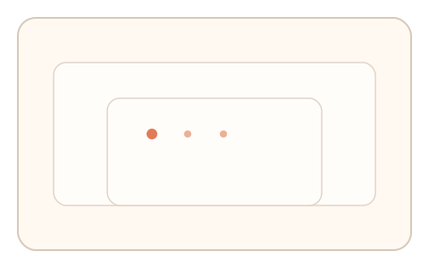
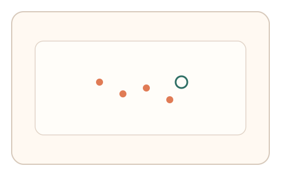
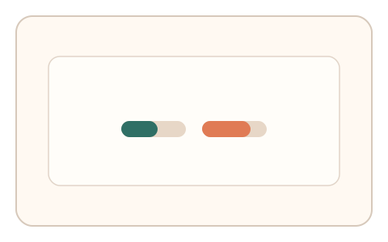

#177
Reverse Brainstorming - Round 4
已扩展
UI 完整性探针
在 UI 中嵌入微偏移探针，验证命中分布是否匹配真实坐标映射。
概念原文
任务中嵌入不可见的交互探针（位置微偏移的命中区），验证命中分布是否符合真实 UI 层坐标映射。
UI 篡改/代理层容易产生坐标映射偏差。
研究背景
代理层或 UI 篡改常带来坐标映射偏差。通过隐蔽命中区与微偏移探针，可检测真实 UI 层的命中分布。
核心机制
- 布置不可见的微偏移命中区。
- 记录点击/触控命中分布。
- 对比期望坐标映射模型。
- 检测偏移与异常命中模式。
用户流程
- 步骤 1：用户完成常规点击任务。
- 步骤 2：系统记录命中分布。
- 步骤 3：系统评估坐标一致性。
判定信号
命中偏移分布
真实 UI 命中有稳定偏移结构。
探针命中率
异常映射会改变探针命中率。
判定逻辑
偏移分布需匹配基线；整体偏移或过均匀命中判异常。
对抗面
- 脚本读取 DOM 并精确点击
- 代理层重映射坐标
防御与缓解
- 随机化探针位置与形状
- 加入动态缩放与旋转
- 多轮分布一致性检查
可达性与风险
探针设置在可达区域并允许误差窗口。
- 探针过小导致误拒
- 高 DPI 缩放影响偏移
可视化状态

状态 1：隐藏探针
UI 中嵌入微偏移探针。

状态 2：命中热区
记录点击热区分布。

状态 3：映射判定
检测坐标映射偏差。
参考资料
Hit-testing
说明命中检测与坐标映射。
User interface
说明 UI 层与交互映射。